Neon Rooftop
Two mascots watch the moon while an ad blimp drifts past.
/neon rooftopCyberpunk Themes for Claude Code: animated pixel-art scenes and a matching palette for the desktop app. Free, open source, one command.
/plugin install cyberpunk-themes --marketplace nocashflow/claude-cyberpunk-themes

Can you fix the flaky login test?
Found it: a race on the session cookie. Patched, then re-ran it 50 times. All green.
- await page.click('#login')+ await page.waitForResponse('/api/session')Reply to Claude…
Each theme draws its scene behind the conversation, then retunes the panels, text, links, code and diffs to match. Your work stays exactly where it was.
Six for dark mode, one for light. Pick your district, choom.
Two mascots watch the moon while an ad blimp drifts past.
/neon rooftop
Green rain and an LED umbrella on a power line.
/neon alley
A netrunner breaks through a wall of ICE.
/neon net
The doc fits a chrome arm. The monitor reads 72.
/neon clinic
Two nomads by their car under a striped sun.
/neon badlands
Near-black with one red. Something is watching through the cracks.
/neon blackwall
Hot pink and cyan. Late noodles, a cable in Claude's back, rain that never stops.
/neon noodle
The light-mode one. Spotless, and a little too perfect.
/neon corpoQuicker than a ripperdoc, and nobody touches your spine.
/plugin install cyberpunk-themes --marketplace nocashflow/claude-cyberpunk-themes
y to the marketplace./neon alley. /neon on its own lists all eight./neon off brings the normal look back.No network, files, processes, models or tools. The only things it saves are the name of your theme and whether motion is on. Don't take my word for it: Claude Code's own validator lists every call, and anyone can run it. No corpo spyware here.
Text contrast is 13:1 or better in every theme, and with reduce motion on, every scene holds still.
$ claude plugin validate .
hooks: session.start, command.run{command=neon},
ui.render{component=Backdrop}
calls: $.command.register, $.store.get, $.store.set,
$.theme.clear, $.theme.set, $.ui.resolve,
$.ui.status, $.ui.toast
✔ Validation passedThe characters are text maps, one letter per pixel, so Claude can redraw them for you. Clone the repo, open it in Claude Code and say what you want: new mascots, new colours, a whole new district.
Read the customising guide.kHHHHHHHHk.
.HHHHHHHHHH.
.HBBBBBBBBH.
.HBEBBBBEBH.
.HBEcBBcEBH.Swap the rooftop mascots for a cat and a robot, same pixel style.
Done. I redrew both as 12-wide text maps in scene.ts and kept their spots by the moon. Run /reload-plugins to see them.
/neon and a theme name in the Claude Code desktop app, for example /neon alley. /neon on its own lists all eight, and /neon off goes back to the normal look./neon command works there, but the terminal and the VS Code extension don't draw backdrops, so you only see the themes in the desktop app.claude plugin validate on it to see every call it makes./neon motion off, or turn on reduce motion in your system settings, and the scene becomes a still picture.Free and MIT licensed. Stay preem, choom.